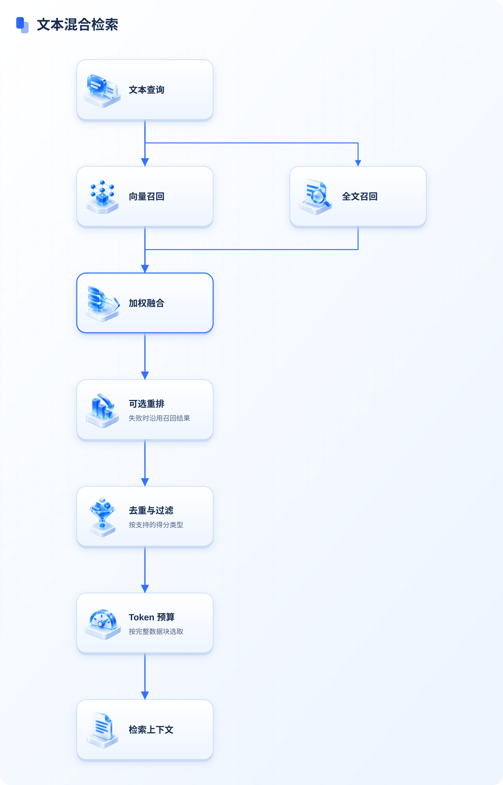
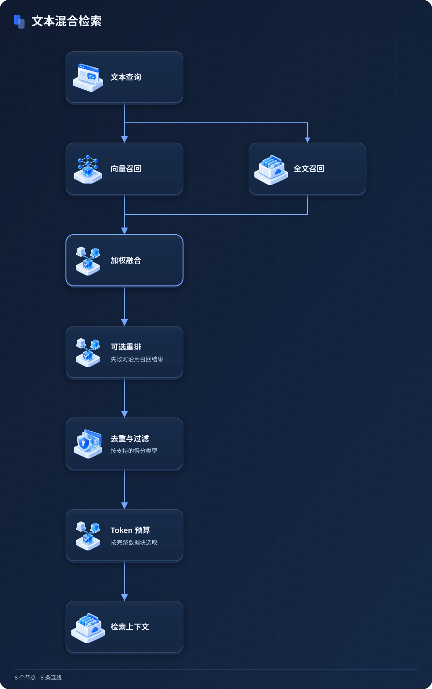

<!doctype html><html lang="zh-CN"><meta charset="utf-8"><meta name="viewport" content="width=device-width,initial-scale=1"><title>文本混合检索</title><style>body{margin:0;padding:24px;background:#eef5ff;font:16px system-ui;color:#162b50}main{max-width:1400px;margin:auto}button{padding:10px 16px;border:1px solid #3370ff;border-radius:8px;background:#3370ff;color:white;cursor:pointer}img{display:block;width:100%;height:auto;margin-top:20px}body.dark{background:#101b30;color:#f0f5ff}body:not(.dark) .dark-image,body.dark .light-image{display:none}</style><main><button type="button" aria-pressed="false">暗色主题</button></main><script>const button=document.querySelector('button');function setTheme(dark){document.body.classList.toggle('dark',dark);button.setAttribute('aria-pressed',String(dark));}setTheme(matchMedia('(prefers-color-scheme:dark)').matches);button.addEventListener('click',()=>setTheme(!document.body.classList.contains('dark')));</script></html>
